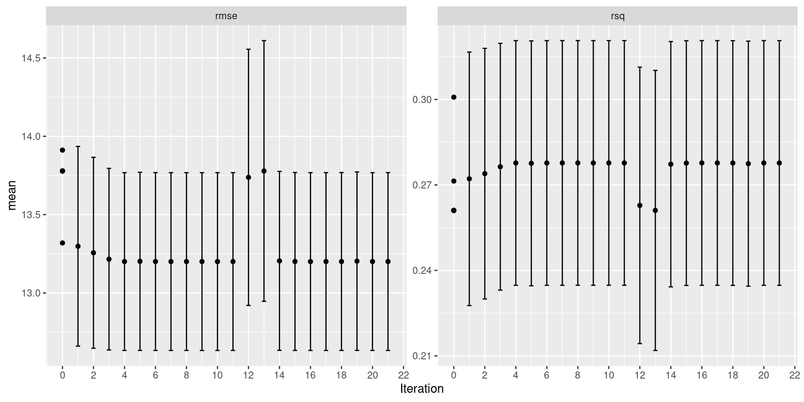
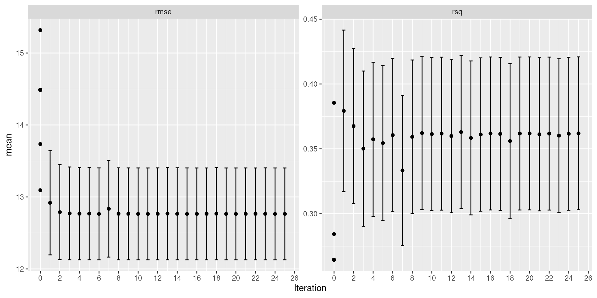

MATH 427: Regularization & Model Tuning
Eric Friedlander
Computational Set-Up
Data: Candy
The data for this lecture comes from the article FiveThirtyEight The Ultimate Halloween Candy Power Ranking by Walt Hickey. To collect data, Hickey and collaborators at FiveThirtyEight set up an experiment people could vote on a series of randomly generated candy match-ups (e.g. Reese’s vs. Skittles). Click here to check out some of the match ups.
The data set contains 12 characteristics and win percentage from 85 candies in the experiment.
Data: Candy
Rows: 85
Columns: 13
$ competitorname <chr> "100 Grand", "3 Musketeers", "One dime", "One quarter…
$ chocolate <lgl> TRUE, TRUE, FALSE, FALSE, FALSE, TRUE, TRUE, FALSE, F…
$ fruity <lgl> FALSE, FALSE, FALSE, FALSE, TRUE, FALSE, FALSE, FALSE…
$ caramel <lgl> TRUE, FALSE, FALSE, FALSE, FALSE, FALSE, TRUE, FALSE,…
$ peanutyalmondy <lgl> FALSE, FALSE, FALSE, FALSE, FALSE, TRUE, TRUE, TRUE, …
$ nougat <lgl> FALSE, TRUE, FALSE, FALSE, FALSE, FALSE, TRUE, FALSE,…
$ crispedricewafer <lgl> TRUE, FALSE, FALSE, FALSE, FALSE, FALSE, FALSE, FALSE…
$ hard <lgl> FALSE, FALSE, FALSE, FALSE, FALSE, FALSE, FALSE, FALS…
$ bar <lgl> TRUE, TRUE, FALSE, FALSE, FALSE, TRUE, TRUE, FALSE, F…
$ pluribus <lgl> FALSE, FALSE, FALSE, FALSE, FALSE, FALSE, FALSE, TRUE…
$ sugarpercent <dbl> 0.732, 0.604, 0.011, 0.011, 0.906, 0.465, 0.604, 0.31…
$ pricepercent <dbl> 0.860, 0.511, 0.116, 0.511, 0.511, 0.767, 0.767, 0.51…
$ winpercent <dbl> 66.97173, 67.60294, 32.26109, 46.11650, 52.34146, 50.…Data Cleaning
candy_rankings_clean <- candy_rankings |>
select(-competitorname) |>
mutate(sugarpercent = sugarpercent*100, # convert proportions into percentages
pricepercent = pricepercent*100, # convert proportions into percentages
across(where(is.logical), ~ factor(.x, levels = c("FALSE", "TRUE")))) # convert logicals into factorsData Cleaning
Rows: 85
Columns: 12
$ chocolate <fct> TRUE, TRUE, FALSE, FALSE, FALSE, TRUE, TRUE, FALSE, F…
$ fruity <fct> FALSE, FALSE, FALSE, FALSE, TRUE, FALSE, FALSE, FALSE…
$ caramel <fct> TRUE, FALSE, FALSE, FALSE, FALSE, FALSE, TRUE, FALSE,…
$ peanutyalmondy <fct> FALSE, FALSE, FALSE, FALSE, FALSE, TRUE, TRUE, TRUE, …
$ nougat <fct> FALSE, TRUE, FALSE, FALSE, FALSE, FALSE, TRUE, FALSE,…
$ crispedricewafer <fct> TRUE, FALSE, FALSE, FALSE, FALSE, FALSE, FALSE, FALSE…
$ hard <fct> FALSE, FALSE, FALSE, FALSE, FALSE, FALSE, FALSE, FALS…
$ bar <fct> TRUE, TRUE, FALSE, FALSE, FALSE, TRUE, TRUE, FALSE, F…
$ pluribus <fct> FALSE, FALSE, FALSE, FALSE, FALSE, FALSE, FALSE, TRUE…
$ sugarpercent <dbl> 73.2, 60.4, 1.1, 1.1, 90.6, 46.5, 60.4, 31.3, 90.6, 6…
$ pricepercent <dbl> 86.0, 51.1, 11.6, 51.1, 51.1, 76.7, 76.7, 51.1, 32.5,…
$ winpercent <dbl> 66.97173, 67.60294, 32.26109, 46.11650, 52.34146, 50.…Data Splitting
Model Tuning
Tuning Parameters
- Tuning Parameters or Hyperparameters are parameters that cannot (or should not) be estimated when a model is being trained
- These parameters control something about the learning process and changing them will result in a different model when fit to the full training data (i.e. after cross-validation)
- Frequently: tuning parameters control model complexity
- Example: \(\lambda\) in LASSO and Ridge regression
- Today: How to choose our tuning parameters?
Question
- Which of the following are tuning parameters:
- \(\beta_0\): the intercept of linear regression
- \(k\) in KNN
- step size in gradient descent
- The number of folds in cross-validation
- Type of distance to use in KNN (i.e. rectangular vs. Gower’s vs. weighted etc)
Basic Idea
- Use CV to try out a bunch of different tuning parameters and choose the “best” one
- How do we choose which tuning parameters to try?
- Two general approaches:
- Grid Search
- Iterative Search
Grid Search
Grid Search
- Create a grid of tuning parameters and try out each combination
- Types of grids:
- Regular Grid: tuning parameter values are spaced deterministically using a linear or logarithmic scale and all combinations of parameters are used (mostly what you want to use in this class)
- Irregular Grids: tuning parameter values are chosen stochastically
- Use when you have A LOT of parameters
Grid Search in R
- Take advantage of package
dialswhich is part of thetidyverse- Set every tuning variable equal to
tune()
- Set every tuning variable equal to
LASSO and Ridge in R
Create Recipe
- Note: no tuning variables in this case
Create workflows
Create Metric Set
Create Folds
Grid Search in R
- Take advantage of package
dialswhich is part of thetidyverse- Set every tuning variable equal to
tune() - Generate grid for hyperparameters
- Set every tuning variable equal to
Generate Grid
Regular Grid Search in R
- Take advantage of package
dialswhich is part of thetidyverse- Set every tuning variable equal to
tune() - Generate grid for hyperparameters using
grid_regular - Tune your model: fit all hyperparameter combination on resamples using
tune_grid
- Set every tuning variable equal to
Tune Models
Regular Grid Search in R
- Take advantage of package
dialswhich is part of thetidyverse- Set every tuning variable equal to
tune() - Generate grid for hyperparameters using
grid_regular - Tune your model: fit all hyperparameter combination on resamples using
tune_grid - Visualize and Choose final model
- Set every tuning variable equal to
Visualizing Results: Ridge

Selecting Best Model: Ridge
Best RMSE
- Which should be use?
Finalize Model
- RMSE estimate is less flexible and seems to be sacrificing less \(R^2\) than the opposite
ridge_rmse_final <- finalize_workflow(ridge_wf, best_rmse_ridge)
ridge_rmse_fit <- fit(ridge_rmse_final, data = candy_train)
tidy(ridge_rmse_fit) |>
kable()| term | estimate | penalty |
|---|---|---|
| (Intercept) | 49.8221817 | 4.641589 |
| sugarpercent | 1.6105235 | 4.641589 |
| pricepercent | -0.8755351 | 4.641589 |
| chocolate_TRUE. | 5.5626786 | 4.641589 |
| fruity_TRUE. | 0.8290067 | 4.641589 |
| caramel_TRUE. | 0.9577679 | 4.641589 |
| peanutyalmondy_TRUE. | 2.8412296 | 4.641589 |
| nougat_TRUE. | 0.5018516 | 4.641589 |
| crispedricewafer_TRUE. | 1.6202899 | 4.641589 |
| hard_TRUE. | -1.2156466 | 4.641589 |
| bar_TRUE. | 1.4669984 | 4.641589 |
| pluribus_TRUE. | 0.4265386 | 4.641589 |
Visualizing Results: LASSO

Selecting Best Model: LASSO
Best RMSE
- Which should be use?
Finalize Model
- RMSE estimate is less flexible and seems to be sacrificing less \(R^2\) than the opposite
Using Parsimony as a Tie-Breaker
- Good heuristic: One-Standard Error Rule
- Use resampling to estimate error metrics
- Compute standard error for error metrics
- Select most parsimonious model that is within one standard error of the best performance metric
Selecting Best Model: Ridge
Best RMSE
- Which should be use?
Visualizing Results: Ridge

Finalize Model
- RMSE estimate is less flexible and seems to be sacrificing less \(R^2\) than the opposite
ridge_rmse_final <- finalize_workflow(ridge_wf, best_ose_rmse_ridge)
ridge_rmse_fit <- fit(ridge_rmse_final, data = candy_train)
tidy(ridge_rmse_fit) |>
kable()| term | estimate | penalty |
|---|---|---|
| (Intercept) | 49.8221817 | 4.641589 |
| sugarpercent | 1.6105235 | 4.641589 |
| pricepercent | -0.8755351 | 4.641589 |
| chocolate_TRUE. | 5.5626786 | 4.641589 |
| fruity_TRUE. | 0.8290067 | 4.641589 |
| caramel_TRUE. | 0.9577679 | 4.641589 |
| peanutyalmondy_TRUE. | 2.8412296 | 4.641589 |
| nougat_TRUE. | 0.5018516 | 4.641589 |
| crispedricewafer_TRUE. | 1.6202899 | 4.641589 |
| hard_TRUE. | -1.2156466 | 4.641589 |
| bar_TRUE. | 1.4669984 | 4.641589 |
| pluribus_TRUE. | 0.4265386 | 4.641589 |
Visualizing Results: LASSO

Selecting Best Model: Ridge
Best RMSE
- Which should be use?
Finalize Model
- RMSE estimate is less flexible and seems to be sacrificing less \(R^2\) than the opposite
Using the Test Set as a Tie Breaker
- Once you’ve found you “best” candidate from several different classes of model, it’s ok to compare on test set
- In this case, we have our best ridge and our best lasso model
- Main this to avoid… LOTS of comparisons on your test set
Using the Test Set as a Tie Breaker
candy_test_wpreds <- candy_test |>
mutate(ridge_preds = predict(ridge_rmse_fit, new_data = candy_test)$.pred,
lasso_preds = predict(lasso_rmse_fit, new_data = candy_test)$.pred)
candy_test_wpreds |> rmse(estimate = ridge_preds, truth = winpercent)# A tibble: 1 × 3
.metric .estimator .estimate
<chr> <chr> <dbl>
1 rmse standard 10.6# A tibble: 1 × 3
.metric .estimator .estimate
<chr> <chr> <dbl>
1 rmse standard 12.0# A tibble: 1 × 3
.metric .estimator .estimate
<chr> <chr> <dbl>
1 rsq standard 0.476# A tibble: 1 × 3
.metric .estimator .estimate
<chr> <chr> <dbl>
1 rsq standard 0.341- Ridge Wins!
Good strategies
- First use coarse grid with large range to find general area
- Then use fine grid with small range to fine tune
- Use iterative method to fine tune
Iterative Methods (Bonus Content)
Brief Overview
- Basic Idea: iterative select parameter values to choose based on how previous ones have done
- TMWR gives two examples:
- Bayesian search
- Stochastic Annealing
- Both require an understanding of multivariate probability distributions
Bayesian Search: GP
- Assume performance metrics follow a Gaussian process… dafuq
- Consider two sets of tuning parameters: \(x_1 = (\lambda_1, k_1)\) and \(x_2 = (\lambda_2, k_2)\)
- Let \(Y_1\) and \(Y_2\) be random variables representing the performance metric at these \(x\)’s
- Assume \(\text{Cov}(Y_1, Y_2)\) depends on how far apart \(x_1\) and \(x_2\)
- Covariance should decrease the further apart \(x_1\) and \(x_2\) are
- This covariance function is typically parameterized and estimated from an initial tuning grid
Bayesian Search: Acquisition Function
- GP process gives us predicted mean and variance of performance metrics
- Imagine two scenario’s:
- 1: Predicted mean is slightly better than current parameter choice and variance is low
- Low-Risk, Low-Reward
- 2: Predicted mean is slightly worst than current parameter choice but variance is high
- High-Risk, High-Reward
- 1: Predicted mean is slightly better than current parameter choice and variance is low
- How do we balance?
- Two competing goals: Exploration (got toward high variance) and Exploitation (go toward best mean)
- Acquisition function: balances these two goals (several to choose from)
- tmwr
Bayesian Search: tidymodels
ridge_params <- ridge_wf |>
extract_parameter_set_dials() |>
update(penalty = penalty(c(-2, 1)))
bayes_ridge <- ridge_wf |>
tune_bayes(
resamples = candy_folds,
metrics = candy_metrics, # first metrics is what's optimized (rmse in this case)
initial = tuning_ridge_results,
param_info = ridge_params,
iter = 25
)Bayesian Search: tidymodels
Bayesian Search: tidymodels

Bayesian Search: tidymodels
| penalty | .metric | .estimator | mean | n | std_err | .config | .iter |
|---|---|---|---|---|---|---|---|
| 9.999186 | rmse | standard | 13.20055 | 20 | 0.2720582 | Iter11 | 11 |
| 9.999034 | rmse | standard | 13.20055 | 20 | 0.2720587 | Iter8 | 8 |
| 9.996720 | rmse | standard | 13.20057 | 20 | 0.2720676 | Iter7 | 7 |
| 9.996350 | rmse | standard | 13.20057 | 20 | 0.2720690 | Iter9 | 9 |
| 9.995326 | rmse | standard | 13.20058 | 20 | 0.2720729 | Iter10 | 10 |
Bayesian Search: tidymodels
lasso_params <- lasso_wf |>
extract_parameter_set_dials() |>
update(penalty = penalty(c(-2,1)))
bayes_lasso <- lasso_wf |>
tune_bayes(
resamples = candy_folds,
metrics = candy_metrics, # first metrics is what's optimized (rmse in this case)
initial = tuning_lasso_results,
param_info = lasso_params,
iter = 25
)Bayesian Search: tidymodels
Bayesian Search: tidymodels

Bayesian Search: tidymodels
| penalty | .metric | .estimator | mean | n | std_err | .config | .iter |
|---|---|---|---|---|---|---|---|
| 2.936401 | rmse | standard | 12.76520 | 20 | 0.3059454 | Iter16 | 16 |
| 2.937813 | rmse | standard | 12.76520 | 20 | 0.3059406 | Iter20 | 20 |
| 2.934824 | rmse | standard | 12.76520 | 20 | 0.3059506 | Iter19 | 19 |
| 2.940832 | rmse | standard | 12.76521 | 20 | 0.3059305 | Iter25 | 25 |
| 2.932606 | rmse | standard | 12.76521 | 20 | 0.3059580 | Iter22 | 22 |
Simulated Annealing
- Does anyone know what annealing is in Physics/Material Science?
- Start with initial parameter combination \(x_0\)(think gradient descent)
- Embark on random walk… in each step \(i\)
- Consider small perturbation from \(x_{i-1}\)… let’s call it \(x_{i-1}^{\epsilon}\)
- Get performance for \(x_{i-1}^\epsilon\)
- If performance is better set \(x_i = x_{i-1}^\epsilon\)
- If performance is worse set \(x_i = x_{i-1}^\epsilon\) with probability \(\exp(-c\times D_i\times i)\)
- \(c\) is user specified constant called cooling coefficient
- \(D_i\) percent difference between old and new
- Otherwise \(x_i = x_{i-1}\)
- Idea:
- start hot: likely to accept suboptimal parameter combinations and move around
- cools over time: decrease number sub-optimal acceptances
Simulated Annealing: tidymodels
Simulated Annealing tidymodels

Simulated Annealing tidymodels

Simulated Annealing tidymodels
| penalty | .metric | .estimator | mean | n | std_err | .config | .iter |
|---|---|---|---|---|---|---|---|
| 10.000000 | rmse | standard | 13.20054 | 20 | 0.2720551 | Iter19 | 19 |
| 9.513817 | rmse | standard | 13.20542 | 20 | 0.2739433 | Iter42 | 42 |
| 9.079220 | rmse | standard | 13.21026 | 20 | 0.2758191 | Iter31 | 31 |
| 8.818478 | rmse | standard | 13.21363 | 20 | 0.2770621 | Iter9 | 9 |
| 8.415657 | rmse | standard | 13.21916 | 20 | 0.2790967 | Iter45 | 45 |
Simulated Annealing: tidymodels
Simulated Annealing tidymodels

Simulated Annealing tidymodels

Simulated Annealing tidymodels
| penalty | .metric | .estimator | mean | n | std_err | .config | .iter |
|---|---|---|---|---|---|---|---|
| 4.641589 | rmse | standard | 13.09389 | 20 | 0.3774972 | initial_Preprocessor1_Model09 | 0 |
| 9.934398 | rmse | standard | 13.20114 | 20 | 0.2723052 | Iter39 | 39 |
| 9.189444 | rmse | standard | 13.20896 | 20 | 0.2752983 | Iter25 | 25 |
| 8.786187 | rmse | standard | 13.21407 | 20 | 0.2772191 | Iter37 | 37 |
| 8.333199 | rmse | standard | 13.22037 | 20 | 0.2795509 | Iter26 | 26 |